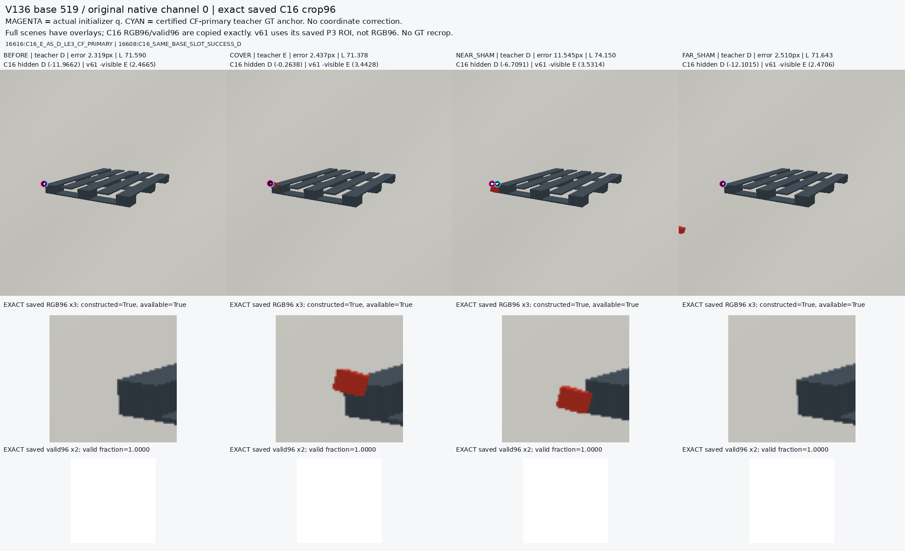
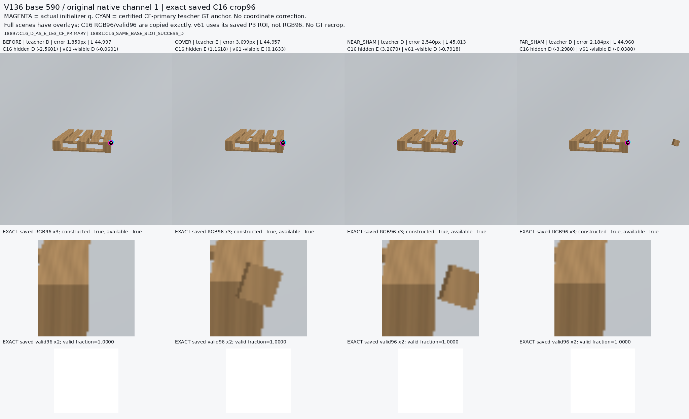
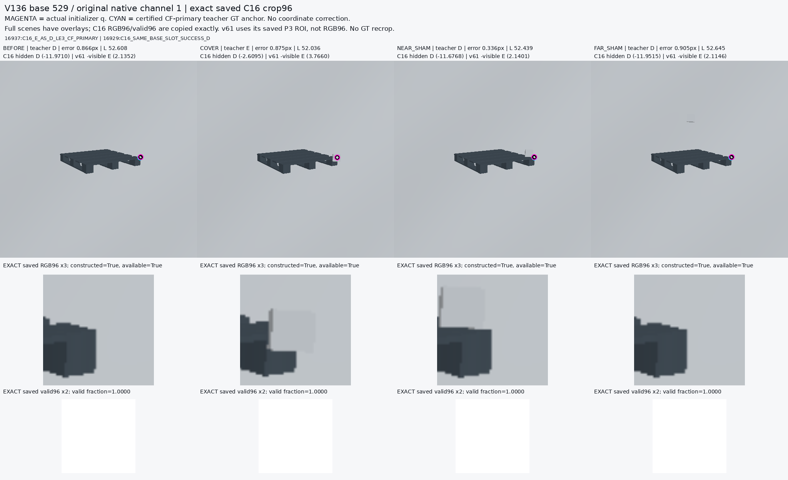
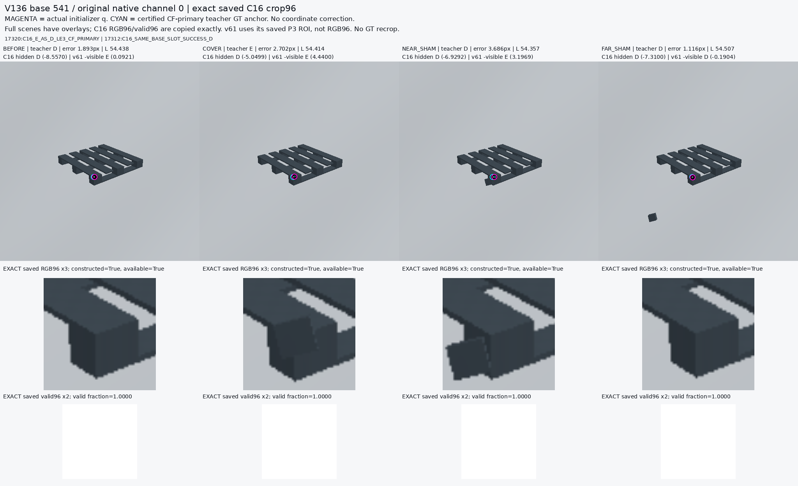

Magenta=q, cyan=teacher GT. RGB96 uses stored model-input pixels; no GT recrop. All selected CF-primary cases and four same-base variants are preserved. This is synthetic source diagnosis, not real application accuracy.
C16_E_AS_D_LE3_CF_PRIMARY | C16_SAME_BASE_SLOT_SUCCESS_D

C16_D_AS_E_LE3_CF_PRIMARY | C16_SAME_BASE_SLOT_SUCCESS_D

C16_E_AS_D_LE3_CF_PRIMARY | C16_SAME_BASE_SLOT_SUCCESS_D

C16_E_AS_D_LE3_CF_PRIMARY | C16_SAME_BASE_SLOT_SUCCESS_D
